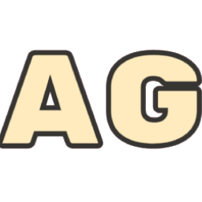

AUTUMN'S LOG
This website is 100% compatible with LibreJS
My Social Media
About Me
My Music
Autumn's Store
My Codeberg
Autumn's Lab
Buy Me a Coffee!
Announcements
After 4 months of development, RaccoonLock v5.0.0 is here! Check it out
here
.
The new
Autumn's Store
is now online!

All these pictures were taken from the
FSF's Website
and are licensed under the CC BY.